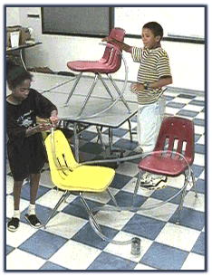
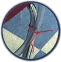
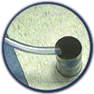
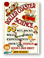

| |
Tubes and Spheres |
Experiment with friction, gravity, kinetic and potential energy while building your coaster. What will it take to get the marble all the way through the tube? Build a totally tubular coaster:

You'll need:
- tubing
- pipe cleaners
- chairs
- marbles
- empty can
Watch our coaster.

Use pipe cleaners to hold tubing in place.
(chairs, tables, etc . . .)

Use a can to catch the marbles.
(added bonus - it makes a great noise)

|
What happens if you raise the launch point of the coaster? Visit an amusement park and ride a rollercoater. How is the coaster different if you use a smaller or larger marble? |
|
 |
|
|
||
|
||
|
|
||
 Gathered by topic |
 Connected together |
 Index of ideas |
 Search |